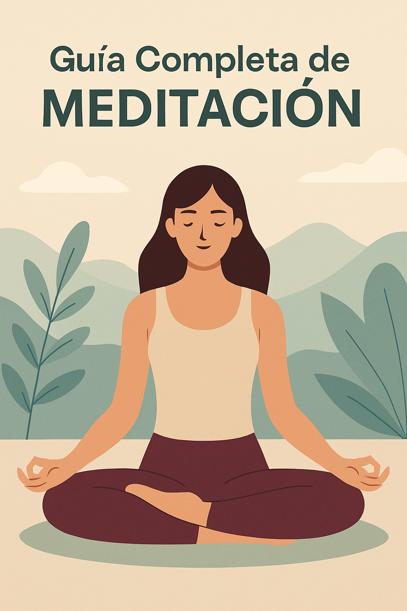

Guía Completa de Meditación: Estrategias, Beneficios y Técnicas Paso a Paso
Introducción: ¿Qué es la meditación y por qué practicarla?
En un mundo lleno de distracciones y estrés constante, la meditación surge como una herramienta poderosa para calmar la mente, cultivar la atención y mejorar la calidad de vida. Esta Guía Completa de Meditación está diseñada para ayudarte a entender qué es realmente meditar, sus beneficios y cómo incorporarla en tu día a día.
Meditar no se trata de dejar la mente en blanco, sino de entrenar la mente para observar pensamientos y emociones sin apego ni juicio. Con la práctica constante, se logra una mayor claridad mental, serenidad y bienestar integral.
Orígenes históricos de la meditación
Meditación en Oriente: raíces filosóficas
Las primeras prácticas de meditación se remontan a las tradiciones hindúes y budistas, con textos como los Vedas y las enseñanzas de Buda Siddhartha Gautama. En Oriente, la meditación siempre ha estado ligada a la espiritualidad y el autoconocimiento.
Meditación en Occidente: expansión y adaptación
En Occidente, la meditación ganó popularidad en el siglo XX gracias a figuras como Jon Kabat-Zinn, quien impulsó el Mindfulness en la medicina. Hoy en día, millones de personas meditan por sus efectos terapéuticos, más allá de lo religioso.
Beneficios comprobados de la meditación
Impacto en la salud mental y emocional
La meditación reduce la ansiedad, el estrés y los síntomas de depresión. Ayuda a gestionar mejor las emociones y a desarrollar resiliencia ante los problemas cotidianos.
Beneficios físicos y biológicos
Estudios muestran que meditar disminuye la presión arterial, fortalece el sistema inmune y mejora la calidad del sueño. También favorece la liberación de hormonas como la serotonina y reduce el cortisol.
Tipos de meditación más practicados
Meditación de atención plena (Mindfulness)
Consiste en observar pensamientos, emociones y sensaciones físicas sin juzgarlos. Es ideal para principiantes y se puede practicar en cualquier momento del día.
Meditación trascendental
Basada en repetir un mantra silencioso, esta técnica busca trascender el pensamiento ordinario para llegar a un estado de conciencia profunda.
Meditación guiada
Perfecta para quienes comienzan. A través de audios o videos, un instructor guía la experiencia para facilitar la relajación y concentración.
Meditación con mantras
Aquí se repiten palabras sagradas o frases positivas. El sonido y la vibración del mantra ayudan a enfocar la mente.
Cómo empezar a meditar paso a paso
Ambiente y espacio ideal
Escoge un lugar tranquilo, silencioso y con buena ventilación. Puede ser una esquina de tu habitación o un rincón con cojines y velas.
Postura y respiración correctas
Siéntate con la espalda recta, relaja los hombros y coloca las manos sobre las rodillas. Respira lentamente, inhalando por la nariz y exhalando por la boca.
Duración recomendada para principiantes
Empieza con 5 a 10 minutos al día. Con el tiempo, aumenta gradualmente a 20 o 30 minutos.
Errores comunes al meditar y cómo evitarlos
- Expectativas irreales: La meditación es una práctica progresiva. Los resultados llegan con la constancia.
- Distraerse y rendirse: Es normal que la mente divague. Cuando ocurra, regresa a tu respiración sin juzgarte.
- Postura incómoda: No fuerces posiciones. Usa cojines o sillas para mantener la columna recta y relajada.
- Falta de regularidad: Reserva un horario fijo, aunque sean solo 5 minutos diarios.
Consejos prácticos para mantener la constancia
- Define un lugar fijo para meditar cada día.
- Comienza con sesiones cortas y aumenta gradualmente.
- Usa recordatorios o alarmas para no olvidarlo.
- Prueba distintas técnicas hasta encontrar la ideal para ti.
- Sé paciente y compasivo contigo mismo.
Herramientas y apps para meditar en casa
Aplicaciones recomendadas:
- Headspace: perfecta para principiantes, con meditaciones guiadas.
- Calm: incluye meditaciones, música relajante y cuentos para dormir.
- Insight Timer: biblioteca de sesiones gratuitas guiadas por instructores de todo el mundo.
Complementos útiles: Música relajante, cuencos tibetanos, cojines de meditación, velas o incienso.
Meditación y espiritualidad: mitos y realidades
La meditación puede practicarse de forma laica, centrada solo en la respiración y la atención plena.
Mito: “No tengo tiempo para meditar”. Realidad: Bastan 5 minutos al día para notar beneficios.
No necesitas equipamiento costoso ni conocimientos avanzados: solo disposición y constancia.
Preguntas frecuentes sobre la Guía Completa de Meditación
1️⃣ ¿Cuánto tiempo debo meditar cada día? Lo ideal es de 10 a 20 minutos, pero incluso 5 minutos diarios pueden marcar la diferencia.
2️⃣ ¿Cuál es la mejor hora para meditar? La mañana es ideal para comenzar el día centrado, pero cualquier momento es bueno.
3️⃣ ¿Qué hago si me quedo dormido mientras medito? Prueba meditar sentado en lugar de acostado para mantener la alerta.
4️⃣ ¿Se puede meditar con música? Sí. La música suave o sonidos de la naturaleza ayudan a relajarse, pero es opcional.
5️⃣ ¿Los niños pueden meditar? Sí, existen ejercicios adaptados de mindfulness para niños.
6️⃣ ¿Dónde puedo aprender más? Puedes profundizar con cursos, retiros o recursos online como Mindful.org.
Conclusión: Empieza tu viaje interior hoy mismo
Esta Guía Completa de Meditación es tu punto de partida para cultivar calma, claridad y equilibrio. No importa tu edad ni tu experiencia: lo importante es comenzar, aunque sea con unos minutos al día.
Respira profundo, observa tus pensamientos y da hoy el primer paso hacia una vida más consciente y plena.
